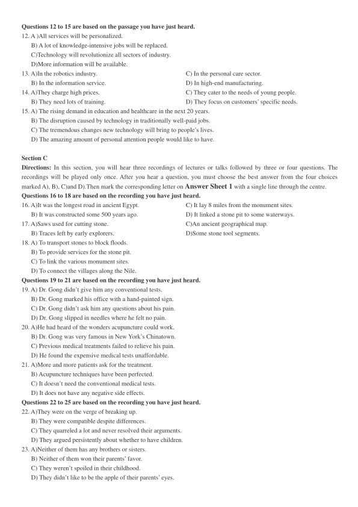
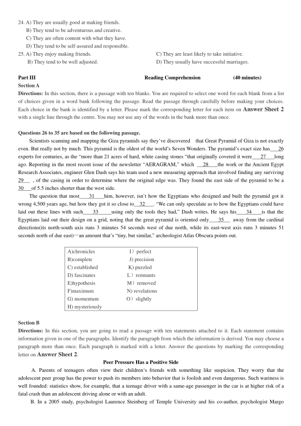
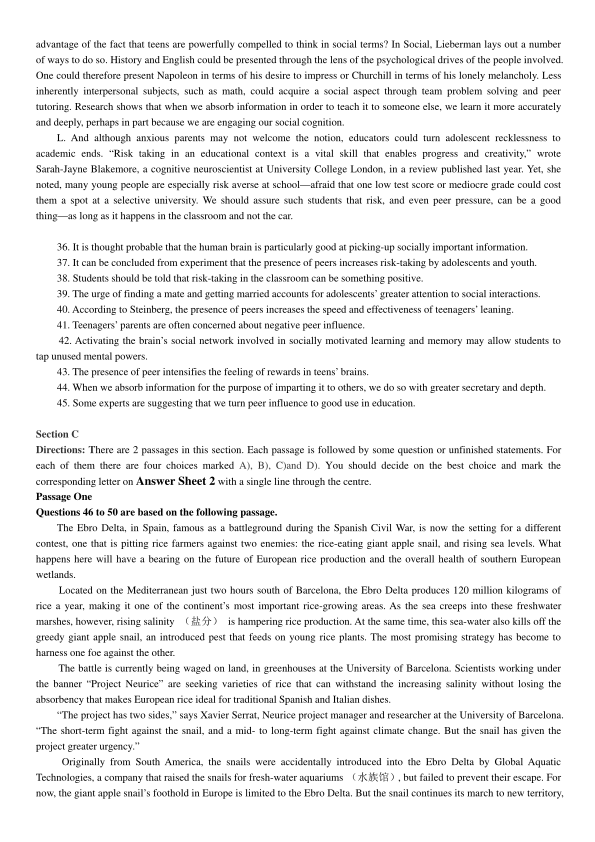

第 1 / 7 页

2018 年6 月大学英语六级考试真题（第1 套）
Part I
Writing
(30 minutes)
Directions: For this part, you are allowed 30 minutes to write an essay on the importance of building trust between
employers and employers. You can cite examples to illustrate your views. You should write at least 150 words but no more
than 200 words.
Part II
Listening Comprehension
(30 minutes)
Section A
Directions: In this section, you will hear two long conversations At the end of each conversation, you will hear four
questions. Both the conversation and the questions will be spoken only once. After you hear a question, you must choose the
best answer from the four choices marked A), B), C) and D). Then mark the corresponding letter on Answer Sheet 1 with
a single line through the centre.
Questions1 to 4 are based on the conversation you have just heard.
1. A)It is a typical salad.
C) It is a weird vegetable.
B) It is a Spanish soup.
D) It is a kind of spicy food.
2. A)To make it thicker.
C) To add to its appeal.
B) To make it more nutritious.
D) To replace an ingredient.
3. A)It contains very little fat.
C) It uses no artificial additives.
B) It uses olive oil in cooking.
D) It is mainly made of vegetables.
4 . A) It does not go stale for two years.
C) It comes from a special kind of pig.
B) It takes no special skill to prepare.
D) It is a delicacy blended with bread.
Questions 5 to 8 are based on the conversation you have just heard.
5. A)They come in a great variety.
C) They do not vary much in price.
B) They do not make decent gifts.
D) They go well with Italian food.
6. A)$30-$40.
C) $50-$60.
B) $40-$50.
D) Around $150.
7. A)They are a healthy choice for elderly people.
C) They symbolize good health and longevity.
B) They are especially popular among Italians.
D) They go well with different kinds of food.
8. A)It is wine imported from California.
C) It is far more expensive than he expected.
B) It is less spicy than all other red wines.
D) It is Italy’s most famous type of red wine.
Section B
Directions: In this section, you will hear two passages. At the end of each passage, you will hear three or four questions.
Both the passage and the questions will be spoken only once. After you hear a question, you must choose the best answer
from the four choices marked A), B), C)and D). Then mark the corresponding letter on Answer Sheet 1 with a single line
through the centre.
Questions 9 to 11 are based on the passage you have just heard.
9. A)Learning others’ secrets.
C)Decoding secret messages.
B) Searching for information.
D)Spreading sensational news.
10.A)They helped the U.S. army in World War Ⅱ.
B) They could write down spoken codes promptly.
C) They were assigned to decode enemy messages.
D) They were good at breaking enemy secret codes.
11. A)Important battles fought in the Pacific War.
B)Decoding of secret messages in war times.
C) A military code that was never broken.
D)Navajo Indians’ contribution to code breaking.
查看 / 复制本页文字
2018 年6 月大学英语六级考试真题（第1 套） Part I Writing (30 minutes) Directions: For this part, you are allowed 30 minutes to write an essay on the importance of building trust between employers and employers. You can cite examples to illustrate your views. You should write at least 150 words but no more than 200 words. Part II Listening Comprehension (30 minutes) Section A Directions: In this section, you will hear two long conversations At the end of each conversation, you will hear four questions. Both the conversation and the questions will be spoken only once. After you hear a question, you must choose the best answer from the four choices marked A), B), C) and D). Then mark the corresponding letter on Answer Sheet 1 with a single line through the centre. Questions1 to 4 are based on the conversation you have just heard. 1. A)It is a typical salad. C) It is a weird vegetable. B) It is a Spanish soup. D) It is a kind of spicy food. 2. A)To make it thicker. C) To add to its appeal. B) To make it more nutritious. D) To replace an ingredient. 3. A)It contains very little fat. C) It uses no artificial additives. B) It uses olive oil in cooking. D) It is mainly made of vegetables. 4 . A) It does not go stale for two years. C) It comes from a special kind of pig. B) It takes no special skill to prepare. D) It is a delicacy blended with bread. Questions 5 to 8 are based on the conversation you have just heard. 5. A)They come in a great variety. C) They do not vary much in price. B) They do not make decent gifts. D) They go well with Italian food. 6. A)$30-$40. C) $50-$60. B) $40-$50. D) Around $150. 7. A)They are a healthy choice for elderly people. C) They symbolize good health and longevity. B) They are especially popular among Italians. D) They go well with different kinds of food. 8. A)It is wine imported from California. C) It is far more expensive than he expected. B) It is less spicy than all other red wines. D) It is Italy’s most famous type of red wine. Section B Directions: In this section, you will hear two passages. At the end of each passage, you will hear three or four questions. Both the passage and the questions will be spoken only once. After you hear a question, you must choose the best answer from the four choices marked A), B), C)and D). Then mark the corresponding letter on Answer Sheet 1 with a single line through the centre. Questions 9 to 11 are based on the passage you have just heard. 9. A)Learning others’ secrets. C)Decoding secret messages. B) Searching for information. D)Spreading sensational news. 10.A)They helped the U.S. army in World War Ⅱ. B) They could write down spoken codes promptly. C) They were assigned to decode enemy messages. D) They were good at breaking enemy secret codes. 11. A)Important battles fought in the Pacific War. B)Decoding of secret messages in war times. C) A military code that was never broken. D)Navajo Indians’ contribution to code breaking.
第 2 / 7 页

Questions 12 to 15 are based on the passage you have just heard.
12. A )All services will be personalized.
B) A lot of knowledge-intensive jobs will be replaced.
C)Technology will revolutionize all sectors of industry.
D)More information will be available.
13. A)In the robotics industry.
C) In the personal care sector.
B) In the information service.
D) In high-end manufacturing.
14. A)They charge high prices.
C) They cater to the needs of young people.
B) They need lots of training.
D) They focus on customers’ specific needs.
15. A) The rising demand in education and healthcare in the next 20 years.
B) The disruption caused by technology in traditionally well-paid jobs.
C) The tremendous changes new technology will bring to people’s lives.
D) The amazing amount of personal attention people would like to have.
Section C
Directions: In this section, you will hear three recordings of lectures or talks followed by three or four questions. The
recordings will be played only once. After you hear a question, you must choose the best answer from the four choices
marked A), B), C)and D).Then mark the corresponding letter on Answer Sheet 1 with a single line through the centre.
Questions 16 to 18 are based on the recording you have just heard.
16. A)It was the longest road in ancient Egypt.
C) It lay 8 miles from the monument sites.
B) It was constructed some 500 years ago.
D) It linked a stone pit to some waterways.
17. A)Saws used for cutting stone.
C)An ancient geographical map.
B) Traces left by early explorers.
D)Some stone tool segments.
18. A) To transport stones to block floods.
B) To provide services for the stone pit.
C) To link the various monument sites.
D) To connect the villages along the Nile.
Questions 19 to 21 are based on the recording you have just heard.
19. A) Dr. Gong didn’t give him any conventional tests.
B) Dr. Gong marked his office with a hand-painted sign.
C) Dr. Gong didn’t ask him any questions about his pain.
D) Dr. Gong slipped in needles where he felt no pain.
20. A)He had heard of the wonders acupuncture could work.
B) Dr. Gong was very famous in New York’s Chinatown.
C) Previous medical treatments failed to relieve his pain.
D) He found the expensive medical tests unaffordable.
21. A)More and more patients ask for the treatment.
B) Acupuncture techniques have been perfected.
C) It doesn’t need the conventional medical tests.
D) It does not have any negative side effects.
Questions 22 to 25 are based on the recording you have just heard.
22. A)They were on the verge of breaking up.
B) They were compatible despite differences.
C) They quarreled a lot and never resolved their arguments.
D) They argued persistently about whether to have children.
23. A)Neither of them has any brothers or sisters.
B) Neither of them won their parents’ favor.
C) They weren’t spoiled in their childhood.
D) They didn’t like to be the apple of their parents’ eyes.
查看 / 复制本页文字
Questions 12 to 15 are based on the passage you have just heard. 12. A )All services will be personalized. B) A lot of knowledge-intensive jobs will be replaced. C)Technology will revolutionize all sectors of industry. D)More information will be available. 13. A)In the robotics industry. C) In the personal care sector. B) In the information service. D) In high-end manufacturing. 14. A)They charge high prices. C) They cater to the needs of young people. B) They need lots of training. D) They focus on customers’ specific needs. 15. A) The rising demand in education and healthcare in the next 20 years. B) The disruption caused by technology in traditionally well-paid jobs. C) The tremendous changes new technology will bring to people’s lives. D) The amazing amount of personal attention people would like to have. Section C Directions: In this section, you will hear three recordings of lectures or talks followed by three or four questions. The recordings will be played only once. After you hear a question, you must choose the best answer from the four choices marked A), B), C)and D).Then mark the corresponding letter on Answer Sheet 1 with a single line through the centre. Questions 16 to 18 are based on the recording you have just heard. 16. A)It was the longest road in ancient Egypt. C) It lay 8 miles from the monument sites. B) It was constructed some 500 years ago. D) It linked a stone pit to some waterways. 17. A)Saws used for cutting stone. C)An ancient geographical map. B) Traces left by early explorers. D)Some stone tool segments. 18. A) To transport stones to block floods. B) To provide services for the stone pit. C) To link the various monument sites. D) To connect the villages along the Nile. Questions 19 to 21 are based on the recording you have just heard. 19. A) Dr. Gong didn’t give him any conventional tests. B) Dr. Gong marked his office with a hand-painted sign. C) Dr. Gong didn’t ask him any questions about his pain. D) Dr. Gong slipped in needles where he felt no pain. 20. A)He had heard of the wonders acupuncture could work. B) Dr. Gong was very famous in New York’s Chinatown. C) Previous medical treatments failed to relieve his pain. D) He found the expensive medical tests unaffordable. 21. A)More and more patients ask for the treatment. B) Acupuncture techniques have been perfected. C) It doesn’t need the conventional medical tests. D) It does not have any negative side effects. Questions 22 to 25 are based on the recording you have just heard. 22. A)They were on the verge of breaking up. B) They were compatible despite differences. C) They quarreled a lot and never resolved their arguments. D) They argued persistently about whether to have children. 23. A)Neither of them has any brothers or sisters. B) Neither of them won their parents’ favor. C) They weren’t spoiled in their childhood. D) They didn’t like to be the apple of their parents’ eyes.
第 3 / 7 页

24. A) They are usually good at making friends.
B) They tend to be adventurous and creative.
C) They are often content with what they have.
D) They tend to be self-assured and responsible.
25. A) They enjoy making friends.
C) They are least likely to take initiative.
B) They tend to be well adjusted.
D) They usually have successful marriages.
Part III
Reading Comprehension
(40 minutes)
Section A
Directions: In this section, there is a passage with ten blanks. You are required to select one word for each blank from a list
of choices given in a word bank following the passage. Read the passage through carefully before making your choices.
Each choice in the bank is identified by a letter. Please mark the corresponding letter for each item on Answer Sheet 2
with a single line through the centre. You may not use any of the words in the bank more than once.
Questions 26 to 35 are based on the following passage.
Scientists scanning and mapping the Giza pyramids say they’ve discovered
that Great Pyramid of Giza is not exactly
even. But really not by much. This pyramid is the oldest of the world’s Seven Wonders. The pyramid’s exact size has
26
experts for centuries, as the “more than 21 acres of hard, white casing stones “that originally covered it were
27
long
ago. Reporting in the most recent issue of the newsletter “AERAGRAM,” which
28
the work or the Ancient Egypt
Research Associates, engineer Glen Dash says his team used a new measuring approach that involved finding any surviving
29
, of the casing in order to determine where the original edge was. They found the east side of the pyramid to be a
30
of 5.5 inches shorter than the west side.
The question that most
31
him, however, isn’t how the Egyptians who designed and built the pyramid got it
wrong 4,500 years age, but how they got it so close to
32
. “We can only speculate as to how the Egyptians could have
laid out these lines with such
33
using only the tools they had,” Dash writes. He says his
34
is that the
Egyptians laid out their design on a grid, noting that the great pyramid is oriented only
35
away from the cardinal
directions(its north-south axis runs 3 minutes 54 seconds west of due north, while its east-west axis runs 3 minutes 51
seconds north of due east)—an amount that’s “tiny, but similar,” archeologist Atlas Obscura points out.
A)chronicles
I）perfect
B)complete
J) precision
C) established
K) puzzled
D) fascinates
L）remnants
E)hypothesis
M）removed
F)maximum
N) revelations
G) momentum
O）slightly
H) mysteriously
Section B
Directions: In this section, you are going to read a passage with ten statements attached to it. Each statement contains
information given in one of the paragraphs. Identify the paragraph from which the information is derived. You may choose a
paragraph more than once. Each paragraph is marked with a letter. Answer the questions by marking the corresponding
letter on Answer Sheet 2.
Peer Pressure Has a Positive Side
A. Parents of teenagers often view their children‘s friends with something like suspicion. They worry that the
adolescent peer group has the power to push its members into behavior that is foolish and even dangerous. Such wariness is
well founded: statistics show, for example, that a teenage driver with a same-age passenger in the car is at higher risk of a
fatal crash than an adolescent driving alone or with an adult.
B. In a 2005 study, psychologist Laurence Steinberg of Temple University and his co-author, psychologist Margo
查看 / 复制本页文字
24. A) They are usually good at making friends. B) They tend to be adventurous and creative. C) They are often content with what they have. D) They tend to be self-assured and responsible. 25. A) They enjoy making friends. C) They are least likely to take initiative. B) They tend to be well adjusted. D) They usually have successful marriages. Part III Reading Comprehension (40 minutes) Section A Directions: In this section, there is a passage with ten blanks. You are required to select one word for each blank from a list of choices given in a word bank following the passage. Read the passage through carefully before making your choices. Each choice in the bank is identified by a letter. Please mark the corresponding letter for each item on Answer Sheet 2 with a single line through the centre. You may not use any of the words in the bank more than once. Questions 26 to 35 are based on the following passage. Scientists scanning and mapping the Giza pyramids say they’ve discovered that Great Pyramid of Giza is not exactly even. But really not by much. This pyramid is the oldest of the world’s Seven Wonders. The pyramid’s exact size has 26 experts for centuries, as the “more than 21 acres of hard, white casing stones “that originally covered it were 27 long ago. Reporting in the most recent issue of the newsletter “AERAGRAM,” which 28 the work or the Ancient Egypt Research Associates, engineer Glen Dash says his team used a new measuring approach that involved finding any surviving 29 , of the casing in order to determine where the original edge was. They found the east side of the pyramid to be a 30 of 5.5 inches shorter than the west side. The question that most 31 him, however, isn’t how the Egyptians who designed and built the pyramid got it wrong 4,500 years age, but how they got it so close to 32 . “We can only speculate as to how the Egyptians could have laid out these lines with such 33 using only the tools they had,” Dash writes. He says his 34 is that the Egyptians laid out their design on a grid, noting that the great pyramid is oriented only 35 away from the cardinal directions(its north-south axis runs 3 minutes 54 seconds west of due north, while its east-west axis runs 3 minutes 51 seconds north of due east)—an amount that’s “tiny, but similar,” archeologist Atlas Obscura points out. A)chronicles I）perfect B)complete J) precision C) established K) puzzled D) fascinates L）remnants E)hypothesis M）removed F)maximum N) revelations G) momentum O）slightly H) mysteriously Section B Directions: In this section, you are going to read a passage with ten statements attached to it. Each statement contains information given in one of the paragraphs. Identify the paragraph from which the information is derived. You may choose a paragraph more than once. Each paragraph is marked with a letter. Answer the questions by marking the corresponding letter on Answer Sheet 2. Peer Pressure Has a Positive Side A. Parents of teenagers often view their children‘s friends with something like suspicion. They worry that the adolescent peer group has the power to push its members into behavior that is foolish and even dangerous. Such wariness is well founded: statistics show, for example, that a teenage driver with a same-age passenger in the car is at higher risk of a fatal crash than an adolescent driving alone or with an adult. B. In a 2005 study, psychologist Laurence Steinberg of Temple University and his co-author, psychologist Margo
第 4 / 7 页
Gardner, then at Temple, divided 306 people into three age groups: young adolescents, with a mean age of 14; older
adolescents, with a mean age of 19; and adults, aged 24 and older. Subjects played a computerized driving game in which
the player must avoid crashing into a wall that materializes, without warning, on the roadway. Steinberg and Gardner
randomly assigned some participants to play alone or with two same-age peers looking on.
C. Older adolescents scored about 50 percent higher on an index of risky driving when their peers were in the
room—and the driving of early adolescents was fully twice as reckless when other young teens were around. In contrast,
adults behaved in similar ways regardless of whether they were on their own or observed by others. “The presence of peers
makes adolescents and youth, but not adults, more likely to take risks,” Steinberg and Gardner concluded.
D. Yet in the years following the publication of this study, Steinberg began to believe that this interpretation did not
capture the whole picture. As he and other researchers examined the question of why teens were more apt to take risks in the
company of other teenagers, they came to suspect that a crowd‘s influence need not always be negative. Now some experts
are proposing that we should take advantage of the teen brain’s keen sensitivity to the presence of friends and leverage it to
improve education.
E. In a 2011 study, Steinberg and his colleagues turned to functional MRI （磁共振）to investigate how the presence
of peers affects the activity in the adolescent brain. They scanned the brains of 40 teens and adults who were playing a
virtual driving game designed to test whether players would brake at a yellow light or speed on through the crossroad.
F. The brains of teenagers, but not adults, showed greater activity in two regions associated with rewards when they
were being observed by same-age peers than when alone. In other words, rewards are more intense for teens when they are
with peers, which motivates them to pursue higher-risk experiences that might bring a big payoff （such as the thrill of just
making the light before it turns red）. But Steinberg suspected this tendency could also have its advantages. In his latest
experiment, published online in August, Steinberg and his colleagues used a computerized version of a card game called the
Iowa Gambling Task to investigate how the presence of peers affects the way young people gather and apply information.
G. The results: Teens who played the Iowa Gambling Task under the eyes of fellow adolescents engaged in more
exploratory behavior, learned faster from both positive and negative outcomes, and achieved better performance on the task
than those who played in solitude. “What our study suggests is that teenagers learn more quickly and more effectively when
their peers are present than when they‘re on their own,” Steinberg says. And this finding could have important implications
for how we think about educating adolescents.
H. Matthew D. Lieberman, a social cognitive neuroscientist at the University of California, Los Angeles, and author of
the 2013 book Social: Why Our Brains Are Wired to Connect，suspects that the human brain is especially adept at learning
socially salient information. He points to a classic 2004 study in which psychologists at Dartmouth College and Harvard
University used functional MRI to track brain activity in 17 young men as they listened to descriptions of people while
concentrating on either socially relevant cues （for example, trying to form an impression of a person based on the
description）or more socially neutral information （such as noting the order of details in the description）.The descriptions
were the same in each condition, but people could better remember these statements when given a social motivation.
I. The study also found that when subjects thought about and later recalled descriptions in terms of their informational
content, regions associated with factual memory, such as the medial temporal lobe, became active. But thinking about or
remembering descriptions in terms of their social meaning activated the dorsomedial prefrontal cortex—part of the brain‘s
social network—even as traditional memory regions registered low levels of activity. More recently, as he reported in a
2012 review, Lieberman has discovered that this region may be part of a distinct network involved in socially motivated
learning and memory. Such findings, he says, suggest that “this network can be called on to process and store the kind of
information taught in school—potentially giving students access to a range of untapped mental powers.”
J. If humans are generally geared to recall details about one another, this pattern is probably even more powerful
among teenagers who are very attentive to social details: who is in, who is out, who likes whom, who is mad at whom. Their
penchant for social drama is not—or not only—a way of distracting themselves from their schoolwork or of driving adults
crazy. It is actually a neurological（神经的）sensitivity, initiated by hormonal changes. Evolutionarily speaking, people in
this age group are at a stage in which they can prepare to find a mate and start their own family while separating from
parents and striking out on their own. To do this successfully, their brain prompts them to think and even obsess about
others.
K. Yet our schools focus primarily on students as individual entities. What would happen if educators instead took
查看 / 复制本页文字
Gardner, then at Temple, divided 306 people into three age groups: young adolescents, with a mean age of 14; older adolescents, with a mean age of 19; and adults, aged 24 and older. Subjects played a computerized driving game in which the player must avoid crashing into a wall that materializes, without warning, on the roadway. Steinberg and Gardner randomly assigned some participants to play alone or with two same-age peers looking on. C. Older adolescents scored about 50 percent higher on an index of risky driving when their peers were in the room—and the driving of early adolescents was fully twice as reckless when other young teens were around. In contrast, adults behaved in similar ways regardless of whether they were on their own or observed by others. “The presence of peers makes adolescents and youth, but not adults, more likely to take risks,” Steinberg and Gardner concluded. D. Yet in the years following the publication of this study, Steinberg began to believe that this interpretation did not capture the whole picture. As he and other researchers examined the question of why teens were more apt to take risks in the company of other teenagers, they came to suspect that a crowd‘s influence need not always be negative. Now some experts are proposing that we should take advantage of the teen brain’s keen sensitivity to the presence of friends and leverage it to improve education. E. In a 2011 study, Steinberg and his colleagues turned to functional MRI （磁共振）to investigate how the presence of peers affects the activity in the adolescent brain. They scanned the brains of 40 teens and adults who were playing a virtual driving game designed to test whether players would brake at a yellow light or speed on through the crossroad. F. The brains of teenagers, but not adults, showed greater activity in two regions associated with rewards when they were being observed by same-age peers than when alone. In other words, rewards are more intense for teens when they are with peers, which motivates them to pursue higher-risk experiences that might bring a big payoff （such as the thrill of just making the light before it turns red）. But Steinberg suspected this tendency could also have its advantages. In his latest experiment, published online in August, Steinberg and his colleagues used a computerized version of a card game called the Iowa Gambling Task to investigate how the presence of peers affects the way young people gather and apply information. G. The results: Teens who played the Iowa Gambling Task under the eyes of fellow adolescents engaged in more exploratory behavior, learned faster from both positive and negative outcomes, and achieved better performance on the task than those who played in solitude. “What our study suggests is that teenagers learn more quickly and more effectively when their peers are present than when they‘re on their own,” Steinberg says. And this finding could have important implications for how we think about educating adolescents. H. Matthew D. Lieberman, a social cognitive neuroscientist at the University of California, Los Angeles, and author of the 2013 book Social: Why Our Brains Are Wired to Connect，suspects that the human brain is especially adept at learning socially salient information. He points to a classic 2004 study in which psychologists at Dartmouth College and Harvard University used functional MRI to track brain activity in 17 young men as they listened to descriptions of people while concentrating on either socially relevant cues （for example, trying to form an impression of a person based on the description）or more socially neutral information （such as noting the order of details in the description）.The descriptions were the same in each condition, but people could better remember these statements when given a social motivation. I. The study also found that when subjects thought about and later recalled descriptions in terms of their informational content, regions associated with factual memory, such as the medial temporal lobe, became active. But thinking about or remembering descriptions in terms of their social meaning activated the dorsomedial prefrontal cortex—part of the brain‘s social network—even as traditional memory regions registered low levels of activity. More recently, as he reported in a 2012 review, Lieberman has discovered that this region may be part of a distinct network involved in socially motivated learning and memory. Such findings, he says, suggest that “this network can be called on to process and store the kind of information taught in school—potentially giving students access to a range of untapped mental powers.” J. If humans are generally geared to recall details about one another, this pattern is probably even more powerful among teenagers who are very attentive to social details: who is in, who is out, who likes whom, who is mad at whom. Their penchant for social drama is not—or not only—a way of distracting themselves from their schoolwork or of driving adults crazy. It is actually a neurological（神经的）sensitivity, initiated by hormonal changes. Evolutionarily speaking, people in this age group are at a stage in which they can prepare to find a mate and start their own family while separating from parents and striking out on their own. To do this successfully, their brain prompts them to think and even obsess about others. K. Yet our schools focus primarily on students as individual entities. What would happen if educators instead took
第 5 / 7 页

advantage of the fact that teens are powerfully compelled to think in social terms? In Social, Lieberman lays out a number
of ways to do so. History and English could be presented through the lens of the psychological drives of the people involved.
One could therefore present Napoleon in terms of his desire to impress or Churchill in terms of his lonely melancholy. Less
inherently interpersonal subjects, such as math, could acquire a social aspect through team problem solving and peer
tutoring. Research shows that when we absorb information in order to teach it to someone else, we learn it more accurately
and deeply, perhaps in part because we are engaging our social cognition.
L. And although anxious parents may not welcome the notion, educators could turn adolescent recklessness to
academic ends. “Risk taking in an educational context is a vital skill that enables progress and creativity,” wrote
Sarah-Jayne Blakemore, a cognitive neuroscientist at University College London, in a review published last year. Yet, she
noted, many young people are especially risk averse at school—afraid that one low test score or mediocre grade could cost
them a spot at a selective university. We should assure such students that risk, and even peer pressure, can be a good
thing—as long as it happens in the classroom and not the car.
36. It is thought probable that the human brain is particularly good at picking-up socially important information.
37. It can be concluded from experiment that the presence of peers increases risk-taking by adolescents and youth.
38. Students should be told that risk-taking in the classroom can be something positive.
39. The urge of finding a mate and getting married accounts for adolescents’ greater attention to social interactions.
40. According to Steinberg, the presence of peers increases the speed and effectiveness of teenagers’ leaning.
41. Teenagers’ parents are often concerned about negative peer influence.
42. Activating the brain’s social network involved in socially motivated learning and memory may allow students to
tap unused mental powers.
43. The presence of peer intensifies the feeling of rewards in teens’ brains.
44. When we absorb information for the purpose of imparting it to others, we do so with greater secretary and depth.
45. Some experts are suggesting that we turn peer influence to good use in education.
Section C
Directions: There are 2 passages in this section. Each passage is followed by some question or unfinished statements. For
each of them there are four choices marked A), B), C)and D). You should decide on the best choice and mark the
corresponding letter on Answer Sheet 2 with a single line through the centre.
Passage One
Questions 46 to 50 are based on the following passage.
The Ebro Delta, in Spain, famous as a battleground during the Spanish Civil War, is now the setting for a different
contest, one that is pitting rice farmers against two enemies: the rice-eating giant apple snail, and rising sea levels. What
happens here will have a bearing on the future of European rice production and the overall health of southern European
wetlands.
Located on the Mediterranean just two hours south of Barcelona, the Ebro Delta produces 120 million kilograms of
rice a year, making it one of the continent’s most important rice-growing areas. As the sea creeps into these freshwater
marshes, however, rising salinity （盐分）is hampering rice production. At the same time, this sea-water also kills off the
greedy giant apple snail, an introduced pest that feeds on young rice plants. The most promising strategy has become to
harness one foe against the other.
The battle is currently being waged on land, in greenhouses at the University of Barcelona. Scientists working under
the banner “Project Neurice” are seeking varieties of rice that can withstand the increasing salinity without losing the
absorbency that makes European rice ideal for traditional Spanish and Italian dishes.
“The project has two sides,” says Xavier Serrat, Neurice project manager and researcher at the University of Barcelona.
“The short-term fight against the snail, and a mid- to long-term fight against climate change. But the snail has given the
project greater urgency.”
Originally from South America, the snails were accidentally introduced into the Ebro Delta by Global Aquatic
Technologies, a company that raised the snails for fresh-water aquariums （水族馆）, but failed to prevent their escape. For
now, the giant apple snail’s foothold in Europe is limited to the Ebro Delta. But the snail continues its march to new territory,
查看 / 复制本页文字
advantage of the fact that teens are powerfully compelled to think in social terms? In Social, Lieberman lays out a number of ways to do so. History and English could be presented through the lens of the psychological drives of the people involved. One could therefore present Napoleon in terms of his desire to impress or Churchill in terms of his lonely melancholy. Less inherently interpersonal subjects, such as math, could acquire a social aspect through team problem solving and peer tutoring. Research shows that when we absorb information in order to teach it to someone else, we learn it more accurately and deeply, perhaps in part because we are engaging our social cognition. L. And although anxious parents may not welcome the notion, educators could turn adolescent recklessness to academic ends. “Risk taking in an educational context is a vital skill that enables progress and creativity,” wrote Sarah-Jayne Blakemore, a cognitive neuroscientist at University College London, in a review published last year. Yet, she noted, many young people are especially risk averse at school—afraid that one low test score or mediocre grade could cost them a spot at a selective university. We should assure such students that risk, and even peer pressure, can be a good thing—as long as it happens in the classroom and not the car. 36. It is thought probable that the human brain is particularly good at picking-up socially important information. 37. It can be concluded from experiment that the presence of peers increases risk-taking by adolescents and youth. 38. Students should be told that risk-taking in the classroom can be something positive. 39. The urge of finding a mate and getting married accounts for adolescents’ greater attention to social interactions. 40. According to Steinberg, the presence of peers increases the speed and effectiveness of teenagers’ leaning. 41. Teenagers’ parents are often concerned about negative peer influence. 42. Activating the brain’s social network involved in socially motivated learning and memory may allow students to tap unused mental powers. 43. The presence of peer intensifies the feeling of rewards in teens’ brains. 44. When we absorb information for the purpose of imparting it to others, we do so with greater secretary and depth. 45. Some experts are suggesting that we turn peer influence to good use in education. Section C Directions: There are 2 passages in this section. Each passage is followed by some question or unfinished statements. For each of them there are four choices marked A), B), C)and D). You should decide on the best choice and mark the corresponding letter on Answer Sheet 2 with a single line through the centre. Passage One Questions 46 to 50 are based on the following passage. The Ebro Delta, in Spain, famous as a battleground during the Spanish Civil War, is now the setting for a different contest, one that is pitting rice farmers against two enemies: the rice-eating giant apple snail, and rising sea levels. What happens here will have a bearing on the future of European rice production and the overall health of southern European wetlands. Located on the Mediterranean just two hours south of Barcelona, the Ebro Delta produces 120 million kilograms of rice a year, making it one of the continent’s most important rice-growing areas. As the sea creeps into these freshwater marshes, however, rising salinity （盐分）is hampering rice production. At the same time, this sea-water also kills off the greedy giant apple snail, an introduced pest that feeds on young rice plants. The most promising strategy has become to harness one foe against the other. The battle is currently being waged on land, in greenhouses at the University of Barcelona. Scientists working under the banner “Project Neurice” are seeking varieties of rice that can withstand the increasing salinity without losing the absorbency that makes European rice ideal for traditional Spanish and Italian dishes. “The project has two sides,” says Xavier Serrat, Neurice project manager and researcher at the University of Barcelona. “The short-term fight against the snail, and a mid- to long-term fight against climate change. But the snail has given the project greater urgency.” Originally from South America, the snails were accidentally introduced into the Ebro Delta by Global Aquatic Technologies, a company that raised the snails for fresh-water aquariums （水族馆）, but failed to prevent their escape. For now, the giant apple snail’s foothold in Europe is limited to the Ebro Delta. But the snail continues its march to new territory,
第 6 / 7 页
says Serrat. “The question is not if it will reach other rice-growing areas of Europe, but when.”
Over the next year and a half investigators will test the various strains of saline-tolerant rice they’ve concocted. In
2018, farmers will plant the varieties with the most promise in the Ebro Delta and Europe’s other two main rice-growing
regions—along the Po in Italy, and France’s Rhône. A season in the field will help determine which, if any, of the varieties
are ready for commercialization.
As an EU-funded effort, the search for salt-tolerant varieties of rice is taking place in all three countries. Each team is
crossbreeding a local European short-grain rice with a long-grain Asian variety that carries the salt-resistant gene. The
scientists are breeding successive generations to arrive at varieties that incorporate salt tolerance but retain about 97 percent
of the European rice genome （基因组）.
46. Why does the author mention the Spanish Civil War at the beginning of the passage?
A）It had great impact on the life of Spanish rice farmers.
B）It is of great significance in the records of Spanish history.
C）Rice farmers in the Ebro Delta are waging a battle of similar importance.
D）Rice farmers in the Ebro Delta are experiencing as hard a time as in the war.
47. What may be the most effective strategy for rice farmers to employ in fighting their enemies?
A）Striking the weaker enemy first.
B）Eliminating the enemy one by one。
C）Killing two bird with one stone.
D）Using one evil to combat the other.
48. What do we learn about “Project Neurice”?
A）Its goals will have to be realized at a cost.
B）It aims to increase the yield of Spanish rice.
C）Its immediate priority is to bring the pest under control.
D）It tries to kill the snails with the help of climate change.
49. What does Neurice project manager say about the giant apple snail?
A）It can survive only on southern European wetlands.
B）It will invade other rice-growing regions of Europe.
C）It multiplies at a speed beyond human imagination.
D）It was introduced into the rice fields on purpose.
50. What is the ultimate goal of the EU-funded program?
A)Cultivating ideal salt-resistant rice varieties.
B)Increasing the absorbency of the Spanish rice.
C)Introducing Spanish rice to the rest of Europe.
D) Popularizing the rice crossbreeding technology.
Passage Two
Questions 51 to 55 are based on the following passage
Photography was once an expensive, laborious ordeal reserved for life’s greatest milestones. Now, the only apparent
cost to taking infinite photos of something as common as a meal is the space on your hard drive and your dining
companion’s patience.
But is there another cost, a deeper cost, to documenting a life experience instead of simply enjoying it? “You hear that
you shouldn’t take all these photos and interrupt the experience, and it’s bad for you, and we’re not living in the present
moment,” says Kristin Diehl, associate professor of marketing at the University of Southern California Marshall School of
Business.
Diehl and her fellow researchers wanted to find out if that was true, so they embarked on a series of nine experiments
in the lab and in the field testing people’s enjoyment in the presence or absence of a camera. The results, published in the
Journal of Personality and Social Psychology, surprised them. Taking photos actually makes people enjoy what they’re
doing more, not less.
“What we find is you actually look at the world slightly differently, because you’re looking for things you want to
capture, that you may want to hang onto,” Diehl explains. “That gets people more engaged in the experience, and they tend
to enjoy it more.”
Take sightseeing. In one experiment, nearly 200 participants boarded a double-decker bus for a tour of Philadelphia.
Both bus tours forbade the use of cell phones but one tour provided digital cameras and encouraged people to take photos.
查看 / 复制本页文字
says Serrat. “The question is not if it will reach other rice-growing areas of Europe, but when.” Over the next year and a half investigators will test the various strains of saline-tolerant rice they’ve concocted. In 2018, farmers will plant the varieties with the most promise in the Ebro Delta and Europe’s other two main rice-growing regions—along the Po in Italy, and France’s Rhône. A season in the field will help determine which, if any, of the varieties are ready for commercialization. As an EU-funded effort, the search for salt-tolerant varieties of rice is taking place in all three countries. Each team is crossbreeding a local European short-grain rice with a long-grain Asian variety that carries the salt-resistant gene. The scientists are breeding successive generations to arrive at varieties that incorporate salt tolerance but retain about 97 percent of the European rice genome （基因组）. 46. Why does the author mention the Spanish Civil War at the beginning of the passage? A）It had great impact on the life of Spanish rice farmers. B）It is of great significance in the records of Spanish history. C）Rice farmers in the Ebro Delta are waging a battle of similar importance. D）Rice farmers in the Ebro Delta are experiencing as hard a time as in the war. 47. What may be the most effective strategy for rice farmers to employ in fighting their enemies? A）Striking the weaker enemy first. B）Eliminating the enemy one by one。 C）Killing two bird with one stone. D）Using one evil to combat the other. 48. What do we learn about “Project Neurice”? A）Its goals will have to be realized at a cost. B）It aims to increase the yield of Spanish rice. C）Its immediate priority is to bring the pest under control. D）It tries to kill the snails with the help of climate change. 49. What does Neurice project manager say about the giant apple snail? A）It can survive only on southern European wetlands. B）It will invade other rice-growing regions of Europe. C）It multiplies at a speed beyond human imagination. D）It was introduced into the rice fields on purpose. 50. What is the ultimate goal of the EU-funded program? A)Cultivating ideal salt-resistant rice varieties. B)Increasing the absorbency of the Spanish rice. C)Introducing Spanish rice to the rest of Europe. D) Popularizing the rice crossbreeding technology. Passage Two Questions 51 to 55 are based on the following passage Photography was once an expensive, laborious ordeal reserved for life’s greatest milestones. Now, the only apparent cost to taking infinite photos of something as common as a meal is the space on your hard drive and your dining companion’s patience. But is there another cost, a deeper cost, to documenting a life experience instead of simply enjoying it? “You hear that you shouldn’t take all these photos and interrupt the experience, and it’s bad for you, and we’re not living in the present moment,” says Kristin Diehl, associate professor of marketing at the University of Southern California Marshall School of Business. Diehl and her fellow researchers wanted to find out if that was true, so they embarked on a series of nine experiments in the lab and in the field testing people’s enjoyment in the presence or absence of a camera. The results, published in the Journal of Personality and Social Psychology, surprised them. Taking photos actually makes people enjoy what they’re doing more, not less. “What we find is you actually look at the world slightly differently, because you’re looking for things you want to capture, that you may want to hang onto,” Diehl explains. “That gets people more engaged in the experience, and they tend to enjoy it more.” Take sightseeing. In one experiment, nearly 200 participants boarded a double-decker bus for a tour of Philadelphia. Both bus tours forbade the use of cell phones but one tour provided digital cameras and encouraged people to take photos.
第 7 / 7 页
The people who took photos enjoyed the experience significantly more, and said they were more engaged, than those who
didn’t.
Snapping a photo directs attention, which heightens the pleasure you get from whatever you’re looking at, Diehl says.
It works for things as boring as archaeological（考古的）museums, where people were given eye-tracking glasses and
instructed either to take photos or not. “People look longer at things they want to photograph,” Diehl says. They report
liking the exhibits more, too.
To the relief of Instagrammers（Instagram 用户）everywhere, it can even make meals more enjoyable. When people
were encouraged to take at least three photos while they ate lunch, they were more immersed in their meals than those who
weren’t told to take photos.
Was it the satisfying click of the camera? The physical act of the snap? No, they found; just the act of planning to take
a photo—and not actually taking it—had the same joy-boosting effect. “If you want to take mental photos, that works the
same way,” Diehl says. “Thinking about what you would want to photograph also gets you more engaged.”
51. What does the author say about photo-taking in the past?
A)It was a painstaking effort for recording life’s major events.
B) It was a luxury that only a few wealthy people could enjoy.
C) It was a good way to preserve one’s precious images.
D) It was a skill that required lots of practice to master.
52. Kristin Diehl conducted a series of experiments on photo-taking to find out_________.
A)what kind of pleasure it would actually bring to photo-takers
B)whether people enjoyed it when they did sightseeing
C)how it could help to enrich people’s life experiences
D) whether it prevented people enjoying what they were doing
53.What do the results of Dienl’s experiments show about people taking pictures?
A）They are distracted from what they are doing.
B) They can better remember what they see or do.
C) They are more absorbed in what catches their eye.
D) They can have a better understanding of the world.
54.What is found about museum visitors with the aid of eye-tracking glasses?
A）They come out with better photographs of the exhibits.
B) They focus more on the exhibits when taking pictures.
C) They have a better view of what are on display.
D) They follow the historical events more easily.
55.What do we learn from the last paragraph?
A）It is better to make plans before taking photos.
B) Mental photos can be as beautiful as snapshots.
C)Photographers can derive great joy from the click of the camera.
D)Even the very thought of taking a photo can have a positive effect.
Part IV
Translation
(30 minutes)
Directions: For this part, you are allowed 30 minutes to translate a passage from Chinese into English. You should write
your answer on Answer Sheet 2.
过去，拥有一辆私家车对大部分中国人而言是件奢侈的事。如今，私家车在中国随处可见。汽车成了人们生活
中不可或缺的一部分，他们不仅开车上下班，还经常驾车出游。有些城市的汽车增长速度过快，以至于交通拥堵和
停车位不足的问题日益严峻，这些城市的市政府不得不出台新规，限制上路汽车的数量。由于空气污染日益严重，
现在越来越多的人选择购买新能源汽车，中国政府也采取了一些措施，支持新能源汽车的发展。
查看 / 复制本页文字
The people who took photos enjoyed the experience significantly more, and said they were more engaged, than those who didn’t. Snapping a photo directs attention, which heightens the pleasure you get from whatever you’re looking at, Diehl says. It works for things as boring as archaeological（考古的）museums, where people were given eye-tracking glasses and instructed either to take photos or not. “People look longer at things they want to photograph,” Diehl says. They report liking the exhibits more, too. To the relief of Instagrammers（Instagram 用户）everywhere, it can even make meals more enjoyable. When people were encouraged to take at least three photos while they ate lunch, they were more immersed in their meals than those who weren’t told to take photos. Was it the satisfying click of the camera? The physical act of the snap? No, they found; just the act of planning to take a photo—and not actually taking it—had the same joy-boosting effect. “If you want to take mental photos, that works the same way,” Diehl says. “Thinking about what you would want to photograph also gets you more engaged.” 51. What does the author say about photo-taking in the past? A)It was a painstaking effort for recording life’s major events. B) It was a luxury that only a few wealthy people could enjoy. C) It was a good way to preserve one’s precious images. D) It was a skill that required lots of practice to master. 52. Kristin Diehl conducted a series of experiments on photo-taking to find out_________. A)what kind of pleasure it would actually bring to photo-takers B)whether people enjoyed it when they did sightseeing C)how it could help to enrich people’s life experiences D) whether it prevented people enjoying what they were doing 53.What do the results of Dienl’s experiments show about people taking pictures? A）They are distracted from what they are doing. B) They can better remember what they see or do. C) They are more absorbed in what catches their eye. D) They can have a better understanding of the world. 54.What is found about museum visitors with the aid of eye-tracking glasses? A）They come out with better photographs of the exhibits. B) They focus more on the exhibits when taking pictures. C) They have a better view of what are on display. D) They follow the historical events more easily. 55.What do we learn from the last paragraph? A）It is better to make plans before taking photos. B) Mental photos can be as beautiful as snapshots. C)Photographers can derive great joy from the click of the camera. D)Even the very thought of taking a photo can have a positive effect. Part IV Translation (30 minutes) Directions: For this part, you are allowed 30 minutes to translate a passage from Chinese into English. You should write your answer on Answer Sheet 2. 过去，拥有一辆私家车对大部分中国人而言是件奢侈的事。如今，私家车在中国随处可见。汽车成了人们生活 中不可或缺的一部分，他们不仅开车上下班，还经常驾车出游。有些城市的汽车增长速度过快，以至于交通拥堵和 停车位不足的问题日益严峻，这些城市的市政府不得不出台新规，限制上路汽车的数量。由于空气污染日益严重， 现在越来越多的人选择购买新能源汽车，中国政府也采取了一些措施，支持新能源汽车的发展。